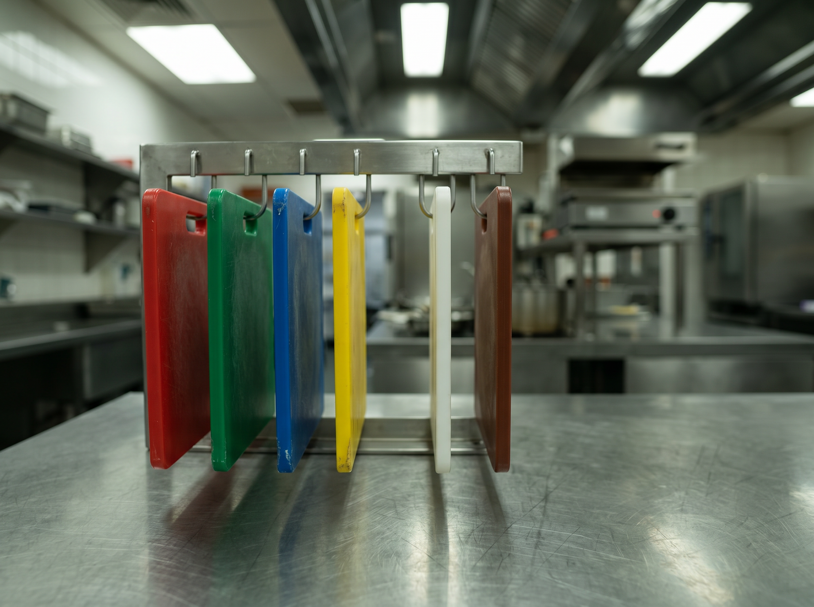
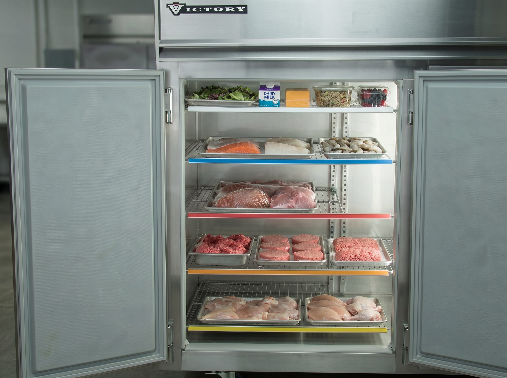
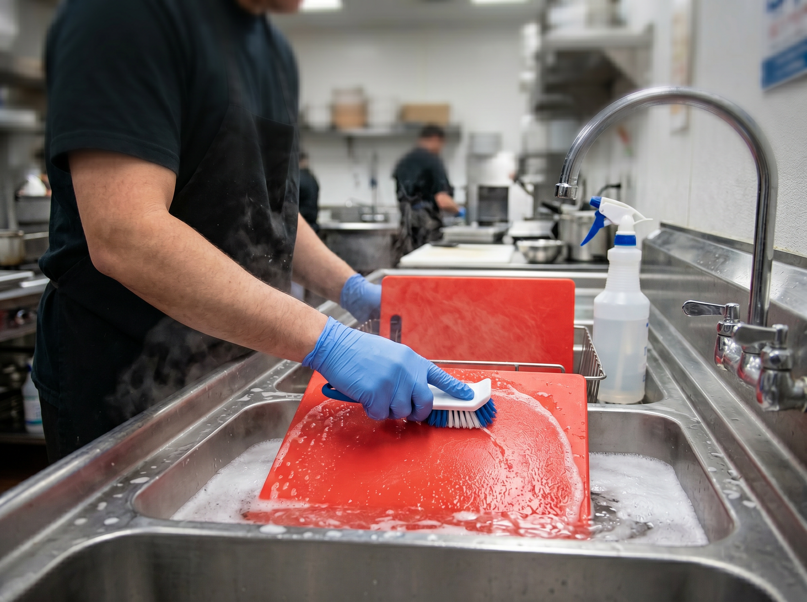
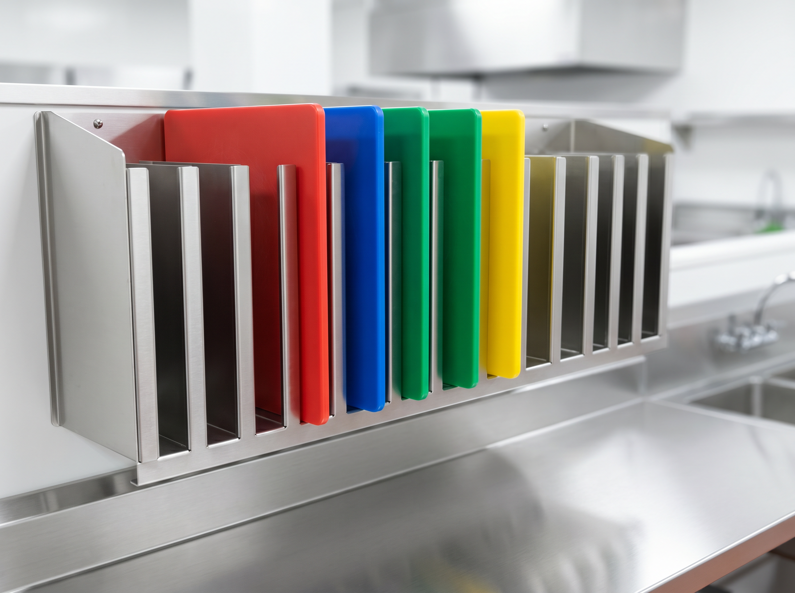

Step 1
Choose one color for the task
Match the board and utensils to the food category before prep starts. If you start a task on a red board, complete that raw red meat task on the red board. Do not move food from one color to another.

Hygiene · Back of House
Use the correct color-coded board, utensil, and storage position every time so raw proteins, allergens, and ready-to-eat foods do not cross-contaminate.
This SOP explains the kitchen color-coding system for cutting boards, utensils, prep surfaces, and fridge storage. The goal is to prevent cross-contamination at the source.
Applies to all kitchen staff handling raw meat, poultry, fish, seafood, produce, dairy, cooked food, ready-to-eat food, or allergen-sensitive prep.
If the correct color is not available, stop and tell the manager. Do not substitute another color because service is busy.
Step 1
Match the board and utensils to the food category before prep starts. If you start a task on a red board, complete that raw red meat task on the red board. Do not move food from one color to another.

Step 2
Store ready-to-eat foods above raw proteins. Raw poultry always goes on the bottom shelf. All raw proteins must be covered, sealed, and stored where drip cannot reach food below.

Step 3
Wash boards and utensils with hot soapy water, rinse, and sanitize before switching tasks, even within the same color category. A board that looks clean is not necessarily sanitized.

Step 4
At the end of each shift, boards must be washed, sanitized, air-dried, and stored vertically in the designated board rack. Each color goes back into its own slot.

Report damaged boards to your manager immediately. Boards with deep score marks, warping, or discoloration can hold bacteria and must be replaced.
Stop prep, tell the manager, isolate any affected food, and wash, rinse, and sanitize the board, utensils, and surface before restarting.
Discard ready-to-eat food that may have touched a raw-protein board, utensil, surface, or drip. Do not try to save it by moving it to a clean board.